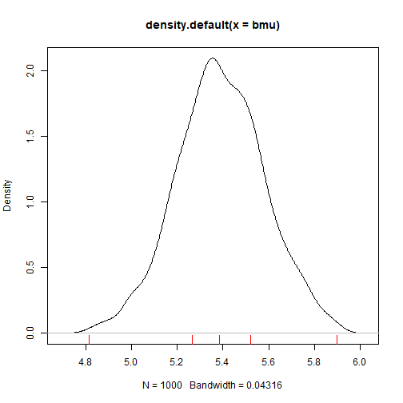
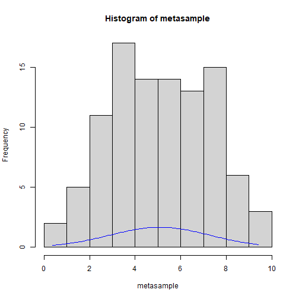
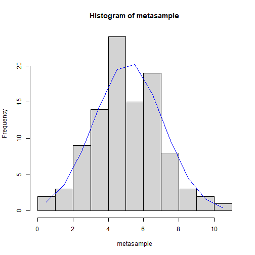

中央
R Markdown
員工的薪水分配，嚴重懷疑不是常態分配
100: ->
/mu<-100
/sd()<-100
/se(stander error) <- /sd/sqrt(100)
1.96
-1.96/se , /mu , 1.96 /se
boot strapping
把我們得到的100個樣本，重複抽1000，(每次必須抽100個)然後得到1000個平均
mu,sd
percentile(2.5) , mu, percentile(97.5)
N<-10
metasample<-rnorm(N,5,2)
bmu<-numeric(1000)
for(i in 1:1000){
rndno<-as.integer(runif(N)*N)+1
smp<-metasample[rndno]
bmu[i]<-mean(smp)
}
p<-density(bmu)
plot(p)
qq<-quantile(bmu)
rug(qq,col="red")
qq
#> 0% 25% 50% 75% 100%
#> 2.956123 4.972385 5.370682 5.739111 6.897819N<-100
metasample<-rnorm(N,5,2)
bmu<-numeric(1000)
for(i in 1:1000){
rndno<-as.integer(runif(N)*N)+1
smp<-metasample[rndno]
bmu[i]<-mean(smp)
}
p<-density(bmu)
plot(p)
qq<-quantile(bmu)
rug(qq,col="red")
qq
#> 0% 25% 50% 75% 100%
#> 4.813307 5.265694 5.383897 5.521531 5.898978N<-100
metasample<-rnorm(N,5,2)
hinfo<-hist(metasample)
lx<-seq(min(metasample),max(metasample),length=100)
ly<-dnorm(lx,mean(metasample),sd(metasample))
sy<-ly*(diff(lx)[1])*N
lines(lx,sy,col="blue")
N<-100
metasample<-rnorm(N,5,2)
hinfo<-hist(metasample)
ly<-dnorm(hinfo$mids,mean(metasample),sd(metasample))
sy<-ly*(diff(hinfo$mids)[1])*N
lines(hinfo$mids,sy,col="blue")